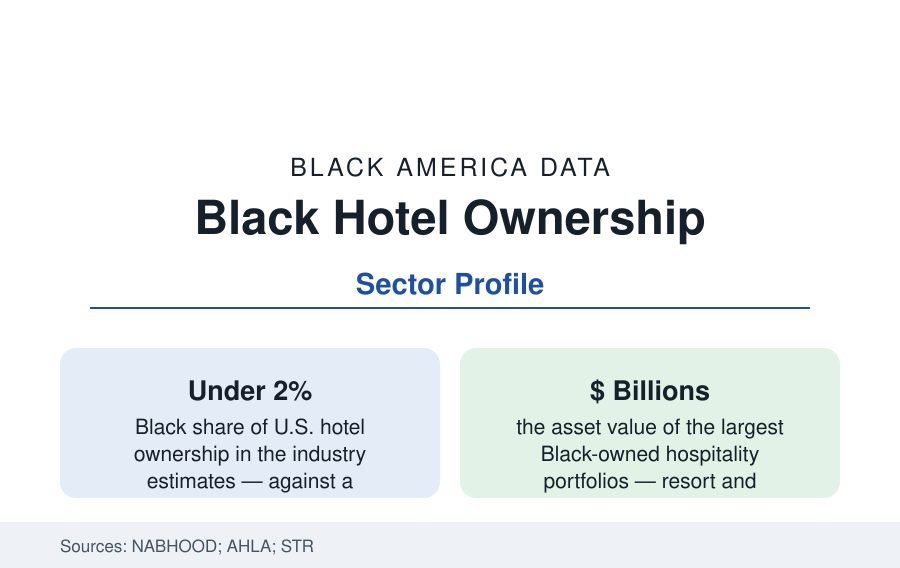

Black Business
Black-Owned Hotels: Ownership at the Top of the Hospitality Pyramid
Black owners hold a small share of America's hotels — but the tier includes some of the industry's most prominent developers. The NABHOOD and industry data.

The hotel industry's pyramid inverts the usual pattern this reference tracks: Black workers are everywhere in its base — housekeeping and food service employ Black workers at high shares — and nearly absent from its ownership, at under two percent of properties in the industry's estimates. At the pyramid's very top, however, sits a small set of Black developers whose portfolios include some of the largest hotels in America. This article reports the hospitality ownership data.
The Ownership Counts and the Brands' Programs
The counting infrastructure is thinner here than in most sectors — the industry tracks rooms and flags, not owner demographics — and the estimates maintained by NABHOOD (the National Association of Black Hotel Owners, Operators & Developers, founded in the 1990s) place Black-owned hotels in the range of several hundred properties out of some 55,000-plus U.S. hotels, concentrated in the limited-service and select-service tiers and the Southeast's markets. The brands' franchise systems are the entry structure (a hotel is a real-estate asset wearing a flag — the flag's franchise approval, the lender's debt, and the management contract are its three gates), and the major brands' diversity-ownership programs (incentive packages, fee deferrals, dedicated development teams at Hilton, Marriott, Choice, and Wyndham in the current era) publish their pipelines as the sector's forward data. The financing gate dominates the practitioner literature: hotel debt is specialized, the equity checks are seven and eight figures, and the syndication networks that assemble them are the ownership map's real border.
The Summit: Developers of Scale
The top of the Black hospitality file is genuinely high. The largest Black-owned hospitality companies own and develop convention-center headquarters hotels, resorts, and urban flagships — portfolios valued in the billions, built over decades from single properties (the Peebles and RLJ stories are the industry's canonical Black development arcs: the former assembling Miami Beach and Washington convention-scale assets, the latter — founded by BET's Robert Johnson after the network's sale — becoming one of the largest hotel REITs in America, a Black-founded public company owning scores of premium hotels). The summit's existence matters to the data beyond its size: it proves the asset class's ceiling is not the constraint — the pipeline beneath the summit (the second-tier developers, the first-time owners the brand programs chase) is where the two-percent statistic is manufactured.
The Historical Layer: The Green Book Economy
The sector's history is a data file of its own: the Green Book's listings (the hotels, tourist homes, and rooming houses that housed Black travelers through the segregation era — a parallel hospitality industry of thousands of small properties) and the resort economy it supported (Idlewild, American Beach, Highland Beach, the Sag Harbor communities of the state and city profiles) constituted a Black hospitality ownership base the integration era dissolved — travelers took their business to the newly opened chains, and the parallel industry's properties closed or converted within a generation. The modern ownership count starts, in effect, from that dissolution's floor: the two percent is not an ancient condition but a rebuilding since the 1970s–80s first franchise wave, which is why the sector's institutions date themselves from that era and its elders are the industry's living memory.
The Workforce-Ownership Span
Hospitality completes the business section's recurring diagram in its sharpest form: the same building contains the Black housekeeper (the employment data's care-and-service workforce, immigrant and native-born), the thin Black management layer (the GM ranks' diversity data in the AHLA studies), the rare Black owner — and the asset's appreciation accruing by the cap table's order. The management-company tier (third-party operators, including several substantial Black-owned firms running hotels for others' ownership) is the span's middle rung and the sector's most realistic ownership on-ramp in the practitioner data: operate first, syndicate second, own third. The convention-and-tourism public layer (the CVBs, the publicly financed headquarters hotels whose deals carry the community-benefits debates of the city profiles) is where the ownership question meets public money most directly.
Reading the Hotel Data
Hotels are real estate with a flag on it, and their Black ownership data are the wealth profile poured in concrete: under two percent of the assets, a summit of genuine scale, a dissolved historic base, and a rebuilding measured in franchise approvals. The industry's diversity programs now compete for the pipeline the Green Book's proprietors never needed permission to build — the file's irony is in the historical record for anyone who reads the two counts together.
More in Black Business
Black-Owned Businesses: Counts, Receipts, and the Representation Gap
About 161,000 Black-owned employer firms and three million solo ventures: how the Census Bureau counts Black business ownership, where firms concentrate, and the gap between population share and business share.
Black Median Net Worth: The Wealth Gap in Federal Reserve Data
The Federal Reserve puts Black median family net worth at $44,900, against $285,000 for White families — about 16 cents on the dollar. The widest gap in economic data.
Black Buying Power: The $1.8 Trillion Consumer Economy
Black buying power is estimated at about $1.8 trillion — larger than the economy of most nations. What the figure measures, who produces it, and what it buys.
Source: National Association of Black Hotel Owners, Operators & Developers (NABHOOD); American Hotel & Lodging Association; STR hospitality data; Black Hoteliers research.